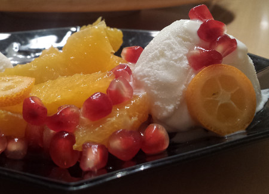

| Zutaten für 4 Personen: | |
| 4 | Orangen |
| 1 | Granatapfelkerne |
| 4 | Kumquats |
| 1 Becher | Joghurteis mit Mango oder Mandarinchensorbet |
| 4 Kl | Conintreau oder Maraschino |
Die Orangen filetieren und auf 4 Teller anrichten.
Die Granatapfelkerne herauslösen und auf die Orangen verteilen. (Die etwas mühselige Arbeit kann man gut vorbereiten.)
Die Kumquats quer zur Achse in 2mm Scheiben schneiden und die Kerne entfernen.
Das Joghurteis oder das Mandarinchensorbet dazu anrichten.
Ein Kaffeelöffel Contreau pro Teller über die Orangen träufeln.
Dies ist ein sehr frisches Dessert das auch prima nach einem Fondue oder Racelette serviert werden kann.
Sandra Keller
Schmeckt super! RE Januar 2016
@LINKBACK_TAG@ @WAKELOCK@